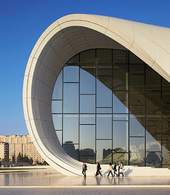

Jual Atap Lengkung di Balikpapan ☎ 0822 4582 0777 (Rinanti)
Salah satu komponen terpenting dari sebuah bangunan baik itu kecil, sedang, besar maupun megah sekalipun pasti memerlukan atap. Ini membuktikan bahwa atap adalah kebutuhan primer setiap bangunan. Karena tanpa atap maka sebuah bangunan tidak dapat disebut bangunan dan hanya dapat disebut sebagai bangunan terbengkalai. Adapula atap galvalum yang berbentuk unik yaitu atap lengkung galvalum. Maka simaklah artikel yang akan saya ulas berikut ini. Penasaran seperti apakah fungsi galvalum sebagai atap? Silakan simak artikel berikut ini. Maka beberapa penjabaran kami dapat anda simak.
Distributor & Supplier Atap Lengkung

Dewasa ini, atap lengkung Balikpapan terbuat dari berbagai bahan yang sangat terkomposisi. Fungsi atap lengkung Balikpapan ialah untuk menutupi seluruh bagian atas dari sebuah bangunan. Atap dapat mempercantik bagian atas dari bangunan anda.
Saat ini banyak sekali jenis atap dengan berbagai bahan dasar pembuatnya. Bahan penutup atap haruslah dari bahan yang kuat menahan berbagai macam kondisi cuaca. Salah satunya juga harus kuat menahan derasnya air hujan.
Penggunaan atap lengkung contohnya adalah pada pembuatan atap stadion. Apabila anda sedang mencari atap lengkung Balikpapan lengkung dari galvalum yang satu ini. dis.or.id adalah distributor terpercaya untuk anda. Maka anda sudah berada di tempat yang tepat. Kunjungi dis.or.id dan kami akan siap membantu kebutuhan anda.
Info Pemesanan Selengkapnya
Google Maps: https://www.google.com/maps/d/u/0/viewer?mid=1jTQUf9ULWdUIa8iDLwabVtcOdrQf8Eme&ll=-7.272623401464149%2C112.6482284&z=17
Note: https://www.facebook.com/notes/distributor-of-industrial-supply/pabrik-supplier-atap-lengkung/1782710675362145/
Event: https://www.facebook.com/events/137280070316926/
Portfolio Produk: https://www.facebook.com/pg/DistributorOfIndustrialSupplyDIS/photos/?tab=album&album_id=1683772021922678
Distributor & Supplier Besi Beton

Bangunan apakah itu dalam wujud rumah atau toko harusnya menggunakan material yang kokoh dan kuat. Anda bisa mendapatkan jenis beton berkualitas dengan membeli di berbagai tempat namun tak semua tempat memberikan kualitas besi yang terbaik. Dan besi beton polos memiliki penampakan benda dengan permukaan licin atau tidak bersirip.
Besi beton polos sangat jarang digunakan kecuali digunakan sebagai kolom.
Salah satu cara untuk mendapatkannya adalah dengan membeli di dis.or.id. Anda bisa langsung mengunjungi dis.or.id. Kualitas dan mutunya pun telah terjamin.
Distributor & Supplier Steel Grating

Steel Grating kini dikenal sebagai salah satu produk yang bermanfaat untuk proses pembangunan. Steel grating sangat aman untuk digunakan pada beberapa kontruksi bangunan. Umumnya, Grating digunakan untuk kolam renang. Selain untuk keamanan, juga untuk aksesoris kolam renang. Terbuat dari bahan yang hot deep galvanis sehingga grating tidak mudah berkarat meskipun terkena air hujan di setiap harinya.
Anda bisa langsung mendapatkan plat grating dengan kualitas terbaik dengan harga yang cukup terjangkau dengan hanya mengunjungi dis.or.id. Terdapat beberapa ukuran yang bisa anda pesan sesuai dengan kebutuhan pembangunan anda.
Distributor & Supplier Pipa (Hitam/Gas, Galvanis)

Manfaat dari pipa hitam galvanis memang banyak sekali untuk kebutuhan konstruksi bangunan. Karena kekuatan yang dimiliki olehnya, tak heran bila pipa hitam banyak digunakan pada kebutuhan konstruksi. Kebanyakan orang memanfaatkan pipa hitam ini pada area pertambangan gas dan minyak, sebagian orang pun bahkan mengira bahwa nama asli dari pipa hitam memanglah pipa gas. Karena telah terlapis dengan material stainless steel pipa ini jadi tahan karat dan korosi, sehingga dapat anda aplikasikan untuk segala kondisi cuaca di Indonesia. Pipa hitam gas terjual dengan berbagai ukuran, ukuran paling kecil yang tersedia adalah ½ inc dan paling besar 40 inc. Segera hubungi kami untuk info pemesanan selengkapnya maupun berkonsultasi mengenai kebutuhan pipa secara langsung.
Distributor & Supplier Kawat Bronjong/Gabion

Kawat bronjong sering dianggap sebagai pencegah erosi. Biasanya ini dilakukan ketika ada jalan atau bangunan yang ada di bawah tebing. Gunanya agar kawat tidak karat. Kawat bronjong ini juga biasanya dipasang pada pilar jembatan agar tidak tergerus karena adanya arus air.
Karena, disan anda bisa mendapatkan kawat bronjong dengan berbagi ukuran dengan kualitas dan mutu terbaik. Tak hanya itu, kawat bronjong yang disediakn juga terdapat bermacam ukuran.
Distributor & Supplier WF H-beam

Saat ini, banyak orang yang ingin mencari jenis besi WF, terlebih ini zaman yang serba modern dan praktis. Jenis besi ini banyak dimanfaatkan sebagai bahan konstruksi baja. Besi jenis ini juga cocok untuk Anda pakai guna membangun rumah, industri, jalan raya, pagar, pabrik, dan masih banyak lagi lainnya. Untuk membuat bangunan seperti rumah, pagar, industri, jalan raya, pabrik, dan lain-lain Anda bisa memakai jenis besi ini. Besi WF memiliki daya tahan terhadap suatu bangunan.
Saat membawanya pun Anda akan lebih mudah dan praktis.
Untuk itu bagi anda yang sedang mencari besi baja dengan kualitas terbaik. Disana anda bisa mendapatkan besi wf yang anda inginkan.
Distributor & Supplier Expanded Metal

Expanded metal atau yang biasa dikenal dengan sebutan X.P.M. ini merupakan salah satu produk hasil dari kemajuan teknologi saat ini. Umumnya dipergunakan sebagai partisi pengaman gudang, railing, pelindung mesin, pagar penjara, plafond, dan lain sebagainya.
Jika anda ingin lebih mengetahui keunggulan yang dimiliki oleh expanded metal, anda bisa langsung mengetahuinya dengan mengunjungi dis.or.id. Jenis ini dapat Anda gunakan sebagai pengaman partisi, pagar pembatas, penutup mesin, tanduk kendaraan, dinding panel, angin-angin dan masih banyak lagi.
Distributor & Supplier Plat (Hitam, Kapal, Bordes, Strip)

Material Plate kapal padadasarnya dilihat dari segi penampakan Fisiknya sama dengan plat hitam mempunyai warna yang hitam akan tetapi,ada perbedaan dari ukuran dimensi dan kandungan kimianya dikarenakan fungsinya dan aplikasinya yang berbeda. Pada umumnya disebut plate kapal dikarenakan biasa digunakan untuk bahan pembuatan badan kapal dan mempunyai standart spesifikasi material yang beragam untuk spesifikasi. Dengan membeli secara online, anda akan lebih efektif dan efisien dalam melakukan pemesanan.
Dis.or.id juga menawarkan plat hitam, kapal, bordes dengan ukuran yang telah anda tentukan. Kualitas yang diberikan sudah terjamin dan bisa anda buktikan sendiri.
Distributor & Supplier Floor Deck (Bondex)

Anda yang punya rencana pembangunan dan membutuhkan material untuk pengecoran lantai mungkin bisa menggunakan floor deck. Umumnya Floor Deck digunakan sebagai alas pada saat proses pembuatan lantai maupun atap dari dak beton. Floor deck merupakan material yang tahan terhadapa api di bandingkan dengan material kayu lainnya. Bentuk dari Floor Deck ini umumnya bergelombang serta dari segi ukurannya selalu sama, yaitu 5 cm.
Jika anda ingin mengetahui lebih lanjut mengenai floor deck ini, anda bisa langsung mengunjungi dis.or.id. Disana anda bisa mendapatkan floor deck yang anda inginkan dan tentunya dengan harga yang jauh lebih murah di bandingkan dengan tempat lainnya.
Distributor & Supplier Atap Galvalum

Dengan semakin panasnya bumi, maka di ruangan pun masih terasa suhu panas. Atap galvalum umumnya dijual dengan sistem per lembar.
Ada yang menjual per m2 tapi ada pula yang menjual dengan sistem lembaran. Selain memberikan banyak keuntungan, kesan pada rumah anda juga akan terlihat modern.
Ada anggapan bahwa atap galvalum membuat suasana menjadi panas dan bersik. Jika beban atap tidak terlalu berat, maka galvalum kecil adalah solusi anda. Harus diakui bahwa atap seng yang digunakan dapat menyebabkan rumah terasa panas. Ini dikarenakan seng menyebabkan rumah anda menjadi terasa panas. Karena galvalum mempunyai daya tahan karat 4x dari galvanis. Atap galvalum mempunyai banyak tipe, jenis dan ukuran yang sesuai dengan ukuran yang dapat anda pilih.
Distributor & Supplier Truss Canal C
Sudah tahukah anda apa yang dimaksud dengan galvalum? Galvalum memang istilah yang kerap kali kita dengar dan umumnya memang sangat erat kaitannya dengan baja. Jadi, galvalum adalah salah satu jenis baja terbaik dimana memiliki cirikas ringan dan tipis namun memiliki daya tahan, dan kekuatan yang sangat baik bahkan di klaim lebih baik bila kita bandingkan dengan baja konvesional. Tidak heran bila saat ini besi ini lebih banyak diminati, selain karena mudah didapatkan, memiliki kekuatan yang sama, tahan lama juga karena harga yang dinilai lebih ekonomis. Jadi fungsi nya sebagai reng atau penyangga genteng. Mencari kanal c galvalum berkualitas dengan harga murah? Maka dis.or.id adalah jawaban tepat untuk anda. Oleh karena itu, jangan ragu lagi atas kegunaan besi yang satu ini.
Distributor & Supplier Hollow Galvalum

Sebenarnya ada banyak unsur yang dilibatkan dalam pembuatan hollow galvalum ini, yaitu alumunium, baja, beserta zinc. Namun, untuk mendapatkan hollow galvalum ini anda tidak perlu repot untuk mencarinya.
Karena hollow galvalum ini dapat ditemukan di toko bangunan khusus yang keberadaannya juga sudah menjamur. Untuk anda yang sedang membutuhkan hollow galvalum dalam jumlah kecil ataupun partai besar, dan sedang mencari hollow galvalum berkualitas harga murah. Dan apabila memungkinakan, pilihlah produk yang berstandar SNI dan bersertifikat. Untuk mendapatkan kriteria tersebut, anda bisa datang ke tempat kami. Tertarik untuk membeli? Hubungi kami sekarang juga, karena kami memiliki penawaran menarik untuk anda.
Distributor & Supplier Seng Gelombang

Andapun wajib memperhatikan bagaimana atap bagian bangunan tersebut apakah berkualitas ataukah tidak, atap dengan kualitas rendah akan beresiko kerusakan maupun kebocoran yang pasti merugikan seisi bangunan ruangan tersebut. Atap menjadi bagian penting sebuah bangunan yang harus diperhatikan. Saking pentingnya, pasti dimana ada bangunan maka disitu ada atap yang menaunginya.
Dengan seng gelombang kecil, anda tak perlu lagi repot memotong ukuran asli seng gelombang dan menata seng gelombang dengan ukuran yang pas pada atap bangunan. Jika anda membutuhkan seng gelombang kecil ini sekarang juga, maka segera hubungi kami di dis.or.id untuk kepentingan lebih lanjut. Seng gelombang dengan warna ataupun transparan amatlah awet bila dibandingkan dengan bahan pembuat atap lainnya.
Distributor & Supplier Plat Seng

Seng atau Plat gavalum dapat dikatakan pembaruan dari seng biasa pada umumnya, karena jenis seng ini tidak panas, tidak bising, anti karat, tahan lama dan masih banyak kelebihan lainnya. Anda dapat memilih lebaran atau per meter sesuai dengan fungsinya.
Harga plat galvanis lembaran dan per meter juga berbeda beda. Masalah klasik dari penggunaan seng adalah mudah terkena karat atau terjadi korosi, menimbulkan suara bising ketika hujan, dan juga membuat rumah anda terasa panas. Berbicara tentang plat seng maka tentu tidak lepas dengan galvalum dan galvanis, yang merupakan jenis plat seng paling berkualitas. Namun apabila anda berencana membangun sebuah atap dari awal, sebaik nya anda membeli plat galvanis lembaran, karena kebutuhan anda banyak dan juga luas, sehingga yang lembaran ini akan lebih efektif untuk anda.
Sebuah rumah tidak akan bisa disebut rumah jika dalam komponen nya tidak ada atap nya. Lalu berapa harga plat galvanis 2018? Bila anda sedang mencari harga terbaru hari ini juga, anda dapat menghubungi kami karena kami menjual plat galvanis, galvalum dengan berbagai ketebalan dan ukuran.
Distributor & Supplier Genteng Metal

Kami adalah distributor genteng metal, tersedia berbagai ukuran dan varian genteng metal. Berbicara tentang genteng metal memang akan identik dengan perbandingan metal vs keramik. Keberadaan genteng metal sudah menggantikan genteng konvensional yang terbuat dari tanah liat. Genteng metal dinilai lebih praktis dan lebih awet.
Bila belum percaya, maka anda dapat mengujungi situs official kami di dis.or.id untuk mendapatkan info yang lebih lanjut dan dapatkan penawaran terbaik dari kami khusus untuk anda.
Distributor & Supplier Besi Wiremesh

Besi lonjor yang disusun rapi hingga membentuk anyaman adalah besi wiremesh. Bentuk anyam dari besi wiremesh tersedia bermacam-macam, ada yang berbentuk kotak ada juga yang berbentuk jajar genjang, setiap jenis besi wiremesh dapat anda pilih sesuai kebutuhan. Untuk kepentingan konstruksi, besi wiremesh diaplikasikan untuk keperluan anak tangga, plat lantai, dan penguat dak beton. Setiap jenis bentuk wiremesh dimanfaatkan untuk kebutuhan yang berbeda-beda, tergantung dari anda memilih jenis anyam kotak atau jajar genjang. Untuk ketebalan besi wiremesh 8 – 10 adalah peruntukkan untuk bangunan bertingkat. Sedangkan untuk kebutuhan bangunan biasa menggunakan jenis wiremesh ukuran 4 sampai 6 sudah cukup kuat. Besi wiremesh diproduksi dengan sistem las otomatis sehingga hasilnya rapi dan jaraknya teratur. Bagi anda yang membutuhkan besi wiremesh, kini dapat memesan pada kami!
Distributor & Supplier Pagar BRC

Pagar BRC (British Reinforced Concrete) adalah pagar yang terbuat dari besi beton dengan diameter 5mm – 8mm dimana ketebalannya tergantung dengan ketinggian pagar. Potongan besi berdiameter tersebut kemudian digabungkan menjadi satu menggunakan mesin las wiremesh. Pagar BRC termasuk dalam kategori pagar yang siap pasang untuk melindungi berbagai bentuk bangunan anda. Apalagi mengingat kekuatan pagar BRC tidak dapat diragukan lagi, karena pagar ini diproduksi dengan baja bertegangan tinggi U55 grade dengan tegangan ijin 2900kg/cm2 sekitar 2. 5 kali dari kekuatan besi biasa. Bagi anda yang membutuhkan pagar BRC anda dapat menghubungi kami untuk informasi pemesanan.
Distributor & Supplier Kawat Loket, Kawat Harmonika

Untuk kebutuhan kawat penyekat, kawat pagar, maupun penutup jendela anda bisa manfaatkan jenis kawat loket harmonika karena strukturnya yang kuat dan membentuk seperti anyaman. Apalagi bila anda membeli jenis kawat loket harmonika yang sudah terlapisi dengan galvanis sehingga ia awet dan tahan terhadap korosi. Anda dapat memesan kawat loket harmonika yang terlapis dengan galvanis untuk kualitas terbaik yang tahan korosi. Kawat loket harmonika yang kami tawarkan berkualitas mutu tinggi sehingga cocok untuk berbagai keperluan, segera hubungi kami untuk informasi pemesanan! Kami dapat menerima segala kebutuhan kawat harmonika anda dengan maksimal ukuran lebar sampai 3 meter.
Distributor & Supplier CNP & UNP

Besi UNP / besi kanal merupakan besi yang memiliki bentuk lengkung seperti huruf U yang banyak diaplikasikan untuk sambungan maupun dudukan atap. Selain sebagai sambungan, besi kanal UNP ini juga cocok dimanfaatkan untuk keperluan girts dan penutup sebuah dinding. Besi UNP sebenarnya memiliki spesifikasi yang hampir sama dengan wide flange, hanya saja besi UNP mudah menekuk sehingga sangat jarang digunakan sebagai kolom bangunan. Besi yang sedikit lebih mirip dengan besi UNP adalah besi CNP, dimana pengaplikasian pada besi ini sendiri adalah pada cladding atau gording. Untuk bentuknya sendiri besi CNP memiliki bentuk yang melengkung dan membentuk huruf C, untuk itulah kenapa banyak orang yang menyebutnya sebagai besi profil C. Bagi anda yang berminat menggunakan besi CNP tentu sangat bersyukur, karena besi ini sangat fleksibel dan ia bisa dimodifikasi dari plat koil dengan teknik cutting. Pemanfaatannya bahkan bisa untuk keperluan otomotif.
Distributor & Supplier Besi Siku

Pada umumnya besi siku yang banyak digunakan dalam kehidupan sehari-hari adalah besi siku sama sisi, dimana ia membentuk dua garis tegak lurus yang membentuk 90 derajat. Untuk panjangnya, pada umumnya besi siku dibuat dengan ukuran 6 meter dan ketebalan lebar yang berbeda-beda. Anda dapat mengunjungi situs resmi kami untuk info pemesanan besi siku selengkapnya! Telah tersedia besi siku dengan berbagai ukuran yang bisa anda pesan. Besi siku yang kami produksi cocok untuk berbagai kebutuhan, baik konstruksi bangunan sampai furniture rumahan.
Distributor & Supplier Hollow (Hitam, Galvanil, Galvanis)

Sekarang ini besi hollow pemanfaatannya sudah melebihi kayu, meskipun terbuat dari besi kualitasnya pun tidak dapat diragukan lagi.Sekarang sudah banyak orang yang beralih pemanfaatan dari kayu menjadi menggunakan besi hollow.Banyak orang yang mulai beralih dari pemanfaatannya yang menggunakan kayu beralih pada hollow hitam galvanil.Besi hollow saat ini menjadi material pengganti kayu yang sangat baik. Dengan menggunakan material ini pembangunan konstruksi juga bisa selesai lebih cepat sehingga meminimalkan upah pekerja. Jika saat ini anda membutuhkan besi hollow, anda dapat menghubungi kontak yang telah tersedia atau kunjungi saja website resmi kami di dis.or.id. Kami telah menyediakan besi hollow hitam galvanil galvanis yang bisa anda pesan langsung. Apabila anda membutuhkan material hollow hitam, kami dapat melayani kebutuhan anda tersebut dengan berbagai spesifikasi ukuran. Kami pun merupakan distributor relasi dari dis.or.id yang menawarkan produk hollow hitam galvanil galvanis dengan kualitas terbaik dan harga yang murah. Terdapat besi hollow dengan berbagai ukuran yang bisa anda pesan langsung, misalnya: ukuran besi hollow 40 x 40 x 2 mm x 6 Meter, 50 x 50 x 3 mm x 6 meter hingga ukuran 150 x 150 x 5 mm x 6 meter.Segera hubungi kontak kami untuk info lebih lanjut. anda dapat memesan besi hollow hitam galvanil galvanis tersebut dengan berbagai ukuran, baik ukuran besi hollow 40 x 40 x 2 mm x 6 Meter, 50 x 50 x 3 mm x 6 meter sampai dengan ukuran 150 x 150 x 5 mm x 6 meter. Kami menyediakan besi hollow hitam dengan ukuran 40, 50, 150 dan lain sebagainya dengan panjang rata-rata 6 meter. Untuk anda yang membutuhkan besi ini, kami menyediakan ukuran besi hollow yang variatif 40 x 40 x 2 mm x 6 Meter, 50 x 50 x 3 mm x 6 meterr sampai dengan ukuran 150 x 150 x 5 mm x 6 meter. Besi hollow bisa dimanfaatkan untuk berbagai keperluan, misalnya seperti pagar, pintu besi, teralis, dan masih banyak lagi. Untuk itu hubungi kontak kami segera!
Distributor & Supplier Pipa Pancang

apalagi mengingat banyak yang mencarinya karena memang memiliki fungsi yang sangatlah bermanfaat. Jika mengenal fungsinya yang memang sangat bermanfaat, apalagi bagi pembangunan di atas permukaan laut, pasti membuatnya lebih di kenal lagi. Sedangkan dalam pemesanannya, jangan khawatir karena banyak sekali penjual tiang pancang terpercaya yang bisa Anda temukan. Nah, bagi Anda yang sedang membutuhkan pipa pancang, jangan khawatir karena Anda bisa mendapatkannya dengan mudah. Dengan demikian, ketika di gunakan pun bisa semakin maksimal. Sedangkan untuk kualitas pipa pun akan sangat terjamin dengan mutu terbaik.
Jasa Pondasi Bor (Strouss/Borepile)

Ketika melakukan proyek pembangunan rumah sendiri, kualitas yang baik hingga dalam hal pengeboran pondasi pun akan menjadi hal yang di harapkan. Hal ini karena sudah tersedia layanan jasa yang menawarkan pondasi bor. Bahkan di Indonesia ini pun juga telah tersebar di mana-mana. Di sini jasa pondasi bor melayani pengeboran yang mana hasil dan kualitasnya terjamin. Apalagi mengingat pelakunya adalah mereka yang sudah profesional dan sangat berpengalaman. Akan tetapi perlu Anda ketahui bahwa dalam pengeboran tersebut akan menimbulkan suara cukup bising sekalipun tidak bergetar. Dalam hal ini jika tidak ingin menggunakan jasa bor, Anda bisa membeli mesinnya. sedangkan jika di lihat dari segi kualitas, sebenarnya kedua jenis ini sama-sama bagus.
Distributor & Supplier Genset (New/Second)

Genset atau generator set yang menghasilkan tenaga listrik kini telah banyak di gunakan sebagai alternatif. Dalam penggunaannya, genset ini menggunakan bahan bakar berupa solar. Untuk keduanya pun bisa Anda beli di DIS.
dengan demikian, pastilah akan lebih meringankan manakala Anda memilih genset yang sudah bekas. sedangkan dari segi merk, genset sendiri juga cukup variatif. Dengan demikian Anda bisa menyesuaikan dengan kebutuhan maupun keuangan.
Distributor & Supplier UPS

Kalau alat elektronik yang satu ini, mungkin memang cukup jarang di ketahui. Hanya saja, yang tidak mengetahui nya pu juga cukup banyak. Sedangkan dalam pengertiannya sendiri secara singkat UPS adalah salah satu alat elektronik di mana bisa menjadi sumber listrik ketika sumber utamanya putus. apalagi bagi pengguna komputer. Bukan hanya kualitas spesifikasi yang berbeda, akan tetapi juga kapasitas listrik yang bisa di simpan. Karena itulah ketika Anda membelinya silahkan menyesuaikan terlebih dahulu seberapa besar kapasitas penampungan listrik yang di butuhkan. Sedangkan untuk pembeliannya, Anda bisa mendapatkan barang di DIS. Sedangkan dalam penjualan, di sini kami menawarkan UPS dengan kualitas terjamin dan harga memadai.
Distributor & Supplier Forklift (Second)

Kini forklif memang cukup banyak di gunakan baik dalam industri kecil, menengah maupun besar. baik itu untuk industri yang kecil maupun besar. Memang forklif ini sendiri kini banyak di gunakan oleh berbagai industri, baik itu industri kecil maupun besar. sedangkan untuk pembeliannya, memang bisa memilih antara yang baru dan bekas. Nah, kalau di DIS sendiri Anda akan banyak menemukan barangnya dengan kualitas bagus sekalipun second. Kalau untuk kualitasnya sendiri, meski bekas tetap saja terjamin. Jika sudah mengetahui kualitasnya yang terjamin tersebut, tentu saja segala aktifitas industri akan menjadi semakin mudah lagi.
Jasa Pembuatan Moulding Inject

Anda sedang bingung untuk membuat plastik yang tepat sebagai wadah salah satu produk Anda, maka jangan khawatir karena banyak jasa yang bisa di manfaatkan untuk pembuatannya termasuk di DIS. Dalam hal ini kalau masalah kuantitas, maka tidak perlu bingung karena berapa pun kebutuhan Anda, di sini akan selalu siap melayani. Sedangkan untuk masalah kuantitas jangan khawatir karena berapa pun kebutuhan Anda terhadap moulding inject, penawar jasa di sini selalu siap membantu. Bukan hanya masalah kuantitas akan tetapi juga untuk kualitasnya. Jadi tinggal menyesuaikan saja dengan kebutuhan Anda sehingga pembuatannya bisa benar-benar pas. Dengan demikian pencetakan plastik ini bisa tepat sasaran.
Jasa Pembuatan Sparepart Mesin Produksi / Alat Berat

Di dunia mesin, tentu saja mendengan kata sparepart atau alat berat sudah tidak asing lagi. Apalagi mengingat bahwa sparepart ini sangat penting sehingga pembuatannya pun memerlukan perhatian yang tinggi. Dengan demikian hasilnya pun akan lebih terjamin dan aman. Karena jika ada kesalahan sedikit saja, bisa jadi akan berakibat fatal dan membahayakan penggunanya. Sedangkan harga penawaran, untuk setiap alat berat bisa berbeda tergantung jenis dan ukurannya.
Jasa Service Elektronik (Kompor Gas, Dispenser, Mesin Cuci)

Service elektronik, kini sudah banyak di temui. Oleh karena itu, sebagai penyeimbang, tidak heran pula jika jasa service elektronik yang melayani perbaikan seperti kompor gas, dispenser dan mesin cuci terus bermunculan. Sedangkan di industri DIS pun Anda juga bisa mendapatkan jasa tersebut. Untuk kualitas service yang di tawarkan, jangan khawatir karena kualitasnya sangatlah tinggi. Nah, kalau masalah servicenya sendiri sebenarnya Anda bisa juga melakukannya pada barang-barang yang harus di cek saja sekalipun tidak ada keluhan secara spesifik. Sedangkan untuk service ini sebenarnya tidak hanya untuk barang-barang bermasalah saja melainkan juga untuk pegecekan barang elektronik Anda sehingga akan tetap aman dan lancar di gunakan.
Nah, apakah anda sudah mengerti betapa pentingnya atap untuk keperluan setiap pembangunan? Tentu sangat penting bukan? Atap sangat dibutuhkan dalam setiap pembangunan sehingga membuatnya sering dicari. Karena tanpa atap, maka sebuah bangunan akan kehilangan jati dirinya sebagai bangunan yang sebenarnya. Tak terkecuali rumah dengan ukuran paling kecil sekalipun, pasti mempunyai atap sebagai komponen utama. Tapi salah satu solusi selain hal tersebut adalah menggunakan atap dengan berbagai jenis sesuai dengan yang saya bahas diatas. Bila anda berkenan, maka anda dapat mengujungi situs utama kami dis.or.id. Jadi bila anda tertarik dalam mencari berbagai jenis atap dan bingung dalam memilih. Kunjungi dis.or.id untuk mendapatkan bantuan, info dan penawaran terbaik khusus untuk anda.